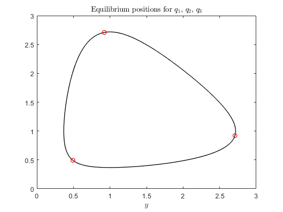

Contents
Parcial Ariadna Cortés
clear all;
close all;
format long;
Equilibrium position for charges
r_sample = surface(linspace(0,2*pi,200));
figure(1)
plot(r_sample(1,:), r_sample(2,:),'-k', 'linewidth',1);
hold on
x0 = [pi; pi/2; 3*pi/2];
[xk,resd,it] = newtonn(x0,eps,50, @dots);
x = xk(end-2:end)
r_result = surface(x);
plot(r_result(1,:), r_result(2,:),'or', 'linewidth',1)
title('Equilibrium positions for $q_1$, $q_2$, $q_3$', 'Interpreter', 'latex')
xlabel('$x$', 'Interpreter', 'latex')
xlabel('$y$', 'Interpreter', 'latex')
Auxiliar codes
function r = surface(sigmas)
x = exp(cos(sigmas));
y = exp(sin(sigmas));
r = [x; y]
end
function d = gradSurface(sigma)
x = -sin(sigma)*exp(cos(sigma));
y = cos(sigma)*exp(sin(sigma));
d = [x; y];
end
function F = coulomb(sigma1, sigma2)
c1 = exp(cos(sigma1)); c2 = exp(cos(sigma2));
s1 = exp(sin(sigma1)); s2 = exp(sin(sigma2));
d = sqrt((c1-c2)^2+(s1-s2)^2);
d3 = d^3;
F = [c1-c2, s1-s2];
F = F/d3;
end
function y = dots(sigma)
F1 = coulomb(sigma(1),sigma(2)) + coulomb(sigma(1), sigma(3));
F2 = coulomb(sigma(2),sigma(1)) + coulomb(sigma(2), sigma(3));
F3 = coulomb(sigma(3),sigma(1)) + coulomb(sigma(3), sigma(2));
Dot1 = dot(F1, gradSurface(sigma(1)));
Dot2 = dot(F2, gradSurface(sigma(2)));
Dot3 = dot(F3, gradSurface(sigma(3)));
y = [Dot1; Dot2; Dot3];
end
function [XK,resd,it] = newtonn(x0,tol,itmax,fun)
xk = [x0];
resd = [norm(feval(fun,xk))];
XK = [x0];
it = 1;
tolk = 1.0;
n = length(x0);
while it < itmax && tolk > tol
Fk = feval(fun, xk);
DFk = jac(fun, xk);
[P,L,U] = pplu(DFk);
dxk = plusolve(L,U,P,-Fk);
xk = xk + dxk;
XK = [XK xk];
resd = [resd norm(Fk)];
tolk = norm(XK(:, end)-XK(:, end-1));
it = it + 1;
end
end
function [P, L, U] = pplu(A)
[m,n] = size(A);
if m~=n
error('not square matrix');
end
U = A;
L = eye(n);
P = [1:n]';
for k = 1:n-1
[~, imax] = max(abs(U(k:end,k)));
imax = imax+k-1;
i1 = [k, imax];
i2 = [imax, k];
U(i1,:) = U(i2,:);
P(k) = imax;
L(i1,1:k-1) = L(i2, 1:k-1);
for jj = [k+1:n]
L(jj, k) = U(jj, k)/U(k, k);
U(jj, k:n) = U(jj, k:n) - L(jj, k)*U(k,k:n);
end
end
end
function x = plusolve(L, U, P, b)
n = length(b);
for k = 1:n-1
b([k P(k)]) = b([P(k) k]);
end
y = fs(L, b);
x = bs(U, y);
end
function DF = jac(F,x)
f1 = feval(F,x);
n = length(f1);
m = length(x);
DF = zeros(n,m);
H = sqrt(eps)*eye(m);
for j = 1:m
f2 = feval(F,x+H(:,j));
DF(:,j) = (f2 - f1)/H(j,j);
end
end
function x = bs(U, b)
x = 0*b;
n = length(b);
x(n) = b(n)/U(n,n);
for ii = n-1:-1:1
x(ii) = (b(ii)-U(ii, ii+1:n)*x(ii+1:n))/U(ii,ii);
end
end
function x = fs(L, b)
x = 0*b;
n = length(b);
x(1) = b(1)/L(1,1);
for ii = 2:n
x(ii) = (b(ii)-L(ii, 1:ii-1)*x(1:ii-1))/L(ii,ii);
end
end
r =
Columns 1 through 3
2.718281828459046 2.716927344810346 2.712869289872053
1.000000000000000 1.032072121472006 1.065139345356346
Columns 4 through 6
2.706123810051201 2.696717677810775 2.684688086108381
1.099196884111956 1.134236463380709 1.170246070037014
Columns 7 through 9
2.670082364102893 2.652957617549733 2.633380298182053
1.207209703534589 1.245107133038289 1.283913663022467
Columns 10 through 12
2.611425707179159 2.587177438542573 2.560726768823043
1.323599910195986 1.364131594773287 1.405469349245963
Columns 13 through 15
2.532172000160136 2.501617764002957 2.469174293172170
1.447568547915373 1.490379160519044 1.533845633317227
Columns 16 through 18
2.434956670097751 2.399084059124515 2.361678930721042
1.577906800996444 1.622495832689922 1.667540215306768
Columns 19 through 21
2.322866285262221 2.282772883787845 2.241526492778211
1.712961777199336 1.758676754979097 1.804595906013769
Columns 22 through 24
2.199255149542306 2.156086454296007 2.112146894428755
1.850624668801928 1.896663373026260 1.942607500634620
Columns 25 through 27
2.067561205829857 2.022451775482566 1.976938088848251
1.988347998792093 2.033771644991484 2.078761464009578
Columns 28 through 30
1.931136224866549 1.885158400702226 1.839112567686757
2.123197195759063 2.166955812419164 2.209912082541186
Columns 31 through 33
1.793102059242274 1.747225290946708 1.701575512309389
2.251939179128659 2.292909327996851 2.332694492035089
Columns 34 through 36
1.656240609282543 1.611302956041329 1.566839314127080
2.371167086340081 2.408200718572017 2.443670948320280
Columns 37 through 39
1.522920776667846 1.479612755068595 1.436975005300533
2.477456058764588 2.509437833491970 2.539502330991035
Columns 40 through 42
1.395061690714249 1.353921478152860 1.313597664046345
2.567540649102094 2.593449671562946 2.617132788761863
Columns 43 through 45
1.274128327123572 1.235546504380199 1.197880386984296
2.638500584895887 2.657471483936256 2.673972347123383
Columns 46 through 48
1.161153532882704 1.125385092984906 1.090590047942762
2.687939015149173 2.699316788729531 2.708060841917881
Columns 49 through 51
1.056779452708982 1.023960686240065 0.992137703906010
2.714136563251786 2.717519820648363 2.718197146856585
Columns 52 through 54
0.961311290375335 0.931479310955703 0.902636959584438
2.716165843221425 2.711434000499969 2.704020436476424
Columns 55 through 57
0.874777001875960 0.847890011842091 0.821964601103704
2.693954551134121 2.681276101140766 2.666034896371200
Columns 58 through 60
0.796987639606422 0.772944467037246 0.749819094311882
2.648290422113542 2.628111391464287 2.605575233201941
Columns 61 through 63
0.727594394663174 0.706252284008780 0.685773890410644
2.580767521124653 2.553781351434893 2.524716675245124
Columns 64 through 66
0.666139712559865 0.647329767328296 0.629323726522848
2.493679593656906 2.460781623128127 2.426138938988118
Columns 67 through 69
0.612101043060617 0.595641066852984 0.579923150745492
2.389871604989073 2.352102796698077 2.312958026342268
Columns 70 through 72
0.564926746908422 0.550631494111108 0.537017296342270
2.272564376427643 2.231049749068557 2.188542137500318
Columns 73 through 75
0.524064393259592 0.511753422965383 0.500065477612250
2.145168925712804 2.101056221550763 2.056328227989036
Columns 76 through 78
0.488982152344000 0.478485588073302 0.468558508589653
2.011106656621067 1.965510186709397 1.919653972449707
Columns 79 through 81
0.459184252479574 0.450346800326347 0.442030797639505
1.873649200406857 1.827602698403380 1.781616596487597
Columns 82 through 84
0.434221573945327 0.426905158449023 0.420068292657808
1.735788039988823 1.690208954088463 1.644965858804279
Columns 85 through 87
0.413698440331693 0.407783795106170 0.402313286108064
1.600139732805715 1.555805924054342 1.512034104897559
Columns 88 through 90
0.397276581863041 0.392664092770672 0.388466972400778
1.468888268936665 1.426426766742187 1.384702377298868
Columns 91 through 93
0.384677117843082 0.381287169321032 0.378290509260142
1.343762411927819 1.303648847351294 1.264398484532848
Columns 94 through 96
0.375681260981333 0.373454287170464 0.371605188256667
1.226043129938164 1.188609795915408 1.152120916983682
Columns 97 through 99
0.370130300814049 0.369026696083864 0.368292178697289
1.116594578939312 1.082044757837505 1.048481566076437
Columns 100 through 102
0.367925285662343 0.367925285662343 0.368292178697289
1.015911502997481 0.984337707614754 0.953760211295024
Columns 103 through 105
0.369026696083864 0.370130300814049 0.371605188256667
0.924176188421749 0.895580203290913 0.867964451698400
Columns 106 through 108
0.373454287170464 0.375681260981333 0.378290509260142
0.841318995886156 0.815631991715035 0.790889907124071
Columns 109 through 111
0.381287169321032 0.384677117843082 0.388466972400778
0.767077731117366 0.744179172689730 0.722176849259618
Columns 112 through 114
0.392664092770672 0.397276581863041 0.402313286108064
0.701052464322370 0.680786974167821 0.661360743624067
Columns 115 through 117
0.407783795106169 0.413698440331693 0.420068292657808
0.642753690893564 0.624945421639259 0.607915352557467
Columns 118 through 120
0.426905158449023 0.434221573945327 0.442030797639505
0.591642824741338 0.576107207194745 0.561287990901898
Columns 121 through 123
0.450346800326346 0.459184252479574 0.468558508589653
0.547164873893880 0.533717837780334 0.520927216233601
Columns 124 through 126
0.478485588073302 0.488982152344000 0.500065477612250
0.508773755924497 0.497238670414495 0.486303687509041
Columns 127 through 129
0.511753422965383 0.524064393259592 0.537017296342270
0.475951090571919 0.466163754291619 0.456925175378240
Columns 130 through 132
0.550631494111108 0.564926746908422 0.579923150745492
0.448219498654161 0.440031538984145 0.432346799471069
Columns 133 through 135
0.595641066852983 0.612101043060617 0.629323726522847
0.425151486322714 0.418432520773254 0.412177548420650
Columns 136 through 138
0.647329767328296 0.666139712559865 0.685773890410643
0.406374946318401 0.401013828137211 0.396084047689395
Columns 139 through 141
0.706252284008780 0.727594394663174 0.749819094311882
0.391576201086334 0.387481627777235 0.383792410695860
Columns 142 through 144
0.772944467037246 0.796987639606422 0.821964601103704
0.380501375720927 0.377602090635483 0.375088863750854
Columns 145 through 147
0.847890011842091 0.874777001875960 0.902636959584437
0.372956742341657 0.371201511019929 0.369819690158514
Columns 148 through 150
0.931479310955703 0.961311290375335 0.992137703906010
0.368808534456530 0.368166031722857 0.367890901937129
Columns 151 through 153
1.023960686240064 1.056779452708982 1.090590047942762
0.367982596631591 0.368441298621285 0.369267922094316
Columns 154 through 156
1.125385092984906 1.161153532882703 1.197880386984296
0.370464113058276 0.372032250123243 0.373975445585959
Columns 157 through 159
1.235546504380198 1.274128327123571 1.313597664046345
0.376297546763812 0.379003137510943 0.382097539832165
Columns 160 through 162
1.353921478152860 1.395061690714249 1.436975005300532
0.385586815493261 0.389477767508653 0.393777941369226
Columns 163 through 165
1.479612755068595 1.522920776667845 1.566839314127079
0.398495625854363 0.403639853252800 0.409220398796890
Columns 166 through 168
1.611302956041328 1.656240609282543 1.701575512309388
0.415247779094164 0.421733249318803 0.428688798903786
Columns 169 through 171
1.747225290946708 1.793102059242274 1.839112567686757
0.436127145452205 0.444061726563561 0.452506689248061
Columns 172 through 174
1.885158400702225 1.931136224866548 1.976938088848250
0.461476876579044 0.470987811211050 0.481055675368914
Columns 175 through 177
2.022451775482565 2.067561205829856 2.112146894428754
0.491697286891905 0.502930070896791 0.514772026605125
Columns 178 through 180
2.156086454296006 2.199255149542307 2.241526492778211
0.527241688863548 0.540358083871965 0.554140678623688
Columns 181 through 183
2.282772883787845 2.322866285262221 2.361678930721042
0.568609323554678 0.583784187896465 0.599685687230059
Columns 184 through 186
2.399084059124514 2.434956670097751 2.469174293172169
0.616334402746729 0.633750991736966 0.651956088851857
Columns 187 through 189
2.501617764002956 2.532172000160136 2.560726768823043
0.670970197712464 0.690813572483381 0.711506089077291
Columns 190 through 192
2.587177438542572 2.611425707179159 2.633380298182053
0.733067105718782 0.755515312668713 0.778868570995572
Columns 193 through 195
2.652957617549733 2.670082364102892 2.684688086108381
0.803143740378241 0.828356496035527 0.854521135002291
Columns 196 through 198
2.696717677810775 2.706123810051201 2.712869289872052
0.881650372109706 0.909755126178239 0.938844297095649
Columns 199 through 200
2.716927344810346 2.718281828459046
0.968924534628198 1.000000000000000
x =
3.926990816987241 -0.082065999145743 7.936047633120226
r =
0.493068691395240 2.709148761445171 0.921295991839077
0.493068691395240 0.921295991839078 2.709148761445171
